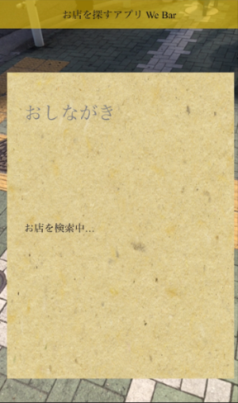
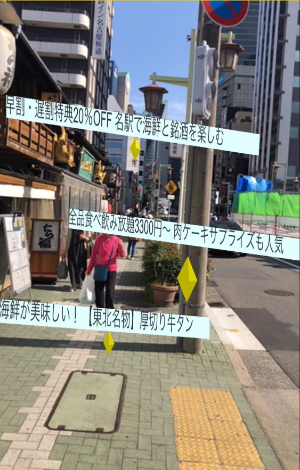
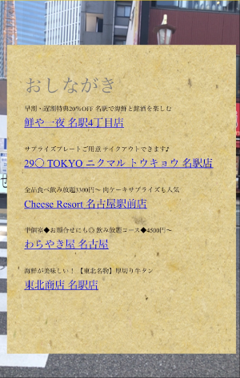

We Barの使い方
起動するとまず"after camera permission prompt, please tap the screen to activate geolocation"(カメラを許可したらスクリーンをタップしてジオロケーションをアクティブにしてください。)と表示されるので、閉じるを押してください。 カメラや位置を許可した後、画面を一度タップしてアプリをアクティブにしてください。
1.お店を探してるよ
画面をタッチすると「おしながき」が表示されます。お店が見つかるまで検索中と表示されます。
2.近くのお店が見つかったよ
お店がある方向にキャッチフレーズが表示されます。
3.お店の詳細を見るよ
お店が見つかった後に「おしながき」にキャッチフレーズとその店名が表示されます。ここからお店の詳細ページが別タブで開きます。
